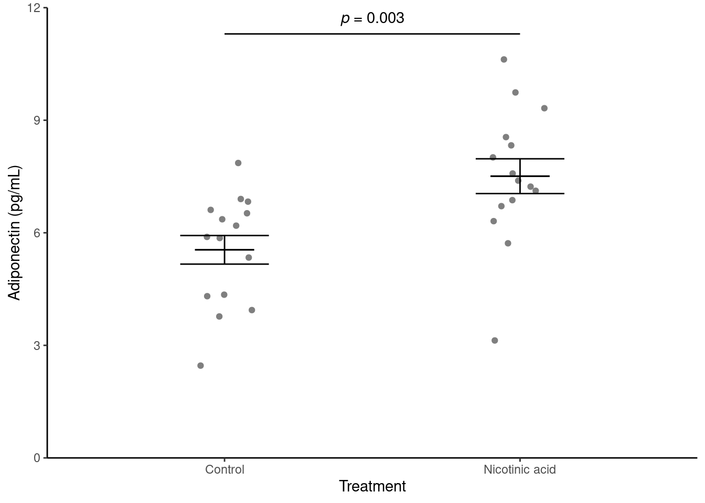
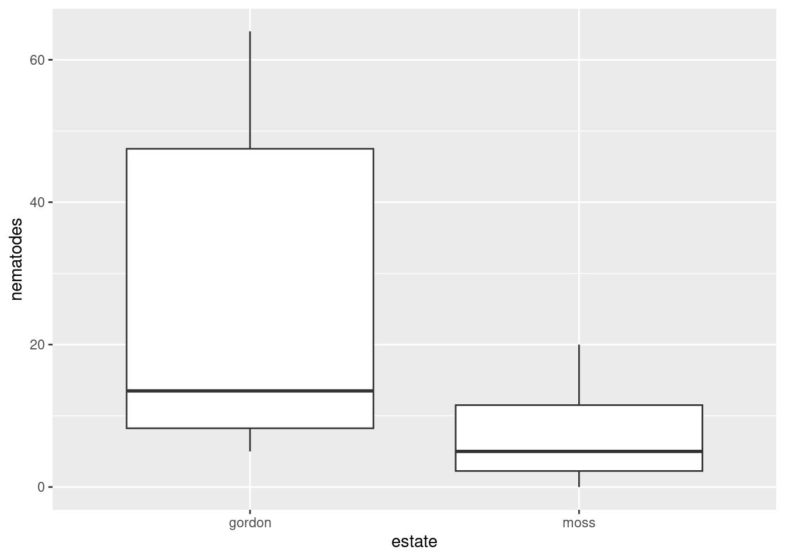
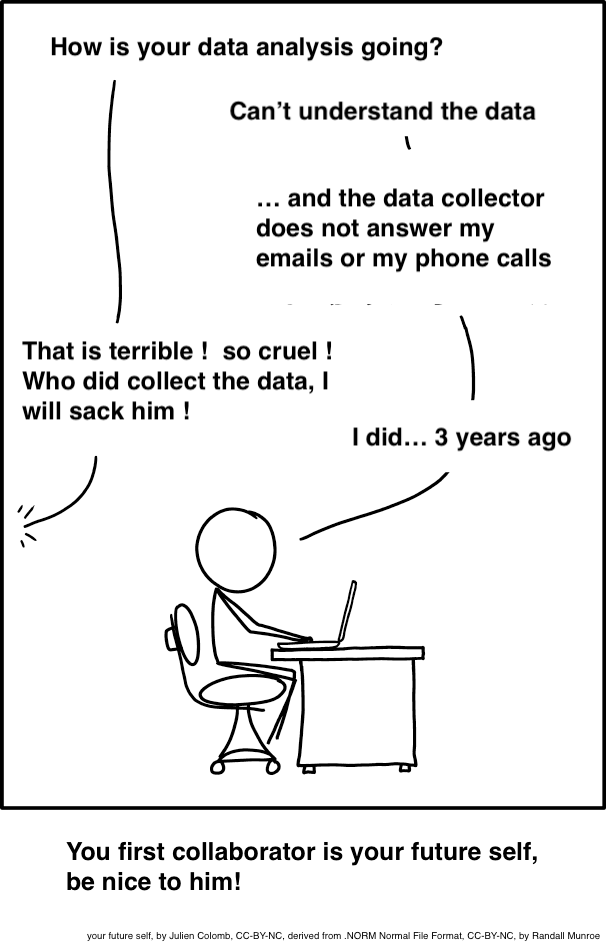

ggplot(data = adip, aes(x = treatment, y = adiponectin)) +
geom_violin()
Two-sample tests
![Illustrated line plot of 'How much I think I know about R' on the y-axis, and 'Time' on the x-axis. Along the line are emoji-style faces, showing the non-linear progression of R knowledge over time. At first, a nervous face becomes a happy face early on in learning, then a grimace face at an intermediate peak before a steep decline (with an exhausted face at the local minimum). Then, a determined face charges back up a hill, reaching another peak with a mind-blown face and text annotation 'join R community on twitter' followed by another decline, but this time the faces look happy even though their 'How much I think I know about R' value is declining.](images/how-much-i-know.png)
In this workshop you will get practice in choosing between, performing, and presenting the results of, two-sample tests and their non-parametric equivalents in R.
Workshops are not a test. It is expected that you often don’t know how to start, make a lot of mistakes and need help. It is expected that you are familiar with independent study content before the workshop. However, you need not remember or understand every detail as the workshop should build and consolidate your understanding. Tips
These four symbols are used at the beginning of each instruction so you know where to carry out the instruction.
 Something you need to do on your computer. It may be opening programs or documents or locating a file.
Something you need to do on your computer. It may be opening programs or documents or locating a file.
 Something you should do in RStudio. It will often be typing a command or using the menus but might also be creating folders, locating or moving files.
Something you should do in RStudio. It will often be typing a command or using the menus but might also be creating folders, locating or moving files.
 Something you should do in your browser on the internet. It may be searching for information, going to the VLE or downloading a file.
Something you should do in your browser on the internet. It may be searching for information, going to the VLE or downloading a file.
 A question for you to think about and answer. Record your answers in your script for future reference.
A question for you to think about and answer. Record your answers in your script for future reference.
Start RStudio from the Start menu.
Go the Files tab in the lower right pane and click on the ... on the right. This will open a “Go to folder” window. Navigate to a place on your computer where you keep your work. Click Open.
Make an RStudio project for this workshop by clicking on the drop-down menu on top right where it says Project: (None) and choosing New Project, then New Directory, then New Project. Navigate to the data-analysis-in-r-1 folder and name the RStudio Project week-7.
Make new folders called data-raw and figures. You can do this on the Files Pane by clicking New Folder and typing into the box that appears.
Make a new script then save it with a name like two-sample-tests.R to carry out the rest of the work.
Add a comment to the script: # Two-sample tests and load the tidyverse (Wickham et al. 2019) package
Adiponectin is exclusively secreted from adipose tissue and modulates a number of metabolic processes. Nicotinic acid can affect adiponectin secretion. 3T3-L1 adipocytes were treated with nicotinic acid or with a control treatment and adiponectin concentration (pg/mL) measured. The data are in adipocytes.txt. Each row represents an independent sample of adipocytes and the first column gives the concentration adiponectin and the second column indicates whether they were treated with nicotinic acid or not.
Save a copy of adipocytes.txt to data-raw
Read in the data and check the structure. I used the name adip for the dataframe/tibble.
We have a tibble containing two variables: adiponectin is the response and is continuous and treatment is explanatory. treatment is categorical with two levels (groups). The first task is visualise the data to get an overview. For continuous response variables with categorical explanatory variables you could use geom_point(), geom_boxplot() or a variety of other geoms. I often use geom_violin() which allows us to see the distribution - the violin is fatter where there are more data points.
Do a quick plot of the data:
ggplot(data = adip, aes(x = treatment, y = adiponectin)) +
geom_violin()
Summarising the data for each treatment group is the next sensible step. The most useful summary statistics are the means, standard deviations, sample sizes and standard errors.
Create a data frame called adip_summary that contains the means, standard deviations, sample sizes and standard errors for the control and nicotinic acid treated samples. You may need to the Summarise from the Week 4 workshop
You should get the following numbers:
| treatment | mean | std | n | se |
|---|---|---|---|---|
| control | 5.546000 | 1.475247 | 15 | 0.3809072 |
| nicotinic | 7.508667 | 1.793898 | 15 | 0.4631824 |
Do you think this is a paired-sample test or two-sample test?
Create a two-sample model like this:
mod <- lm(data = adip,
adiponectin ~ treatment) Examine the model with:
summary(mod)
Call:
lm(formula = adiponectin ~ treatment, data = adip)
Residuals:
Min 1Q Median 3Q Max
-4.3787 -1.0967 0.1927 1.0245 3.1113
Coefficients:
Estimate Std. Error t value Pr(>|t|)
(Intercept) 5.5460 0.4240 13.079 1.9e-13 ***
treatmentnicotinic 1.9627 0.5997 3.273 0.00283 **
---
Signif. codes: 0 '***' 0.001 '**' 0.01 '*' 0.05 '.' 0.1 ' ' 1
Residual standard error: 1.642 on 28 degrees of freedom
Multiple R-squared: 0.2767, Adjusted R-squared: 0.2509
F-statistic: 10.71 on 1 and 28 DF, p-value: 0.00283 What do you conclude from the test? Write your conclusion in a form suitable for a report.
The assumptions of the general linear model are that the residuals – the difference between predicted value (i.e., the group mean) and observed values - are normally distributed and have homogeneous variance. To check these we can examine the mod$residuals variable. You may want to refer to Checking assumptions in the “Single regression” workshop.
Plot the model residuals against the fitted values.
What to you conclude?
To examine normality of the model residuals we can plot them as a histogram and do a normality test on them.
Plot a histogram of the residuals.
Use the shapiro.test() to test the normality of the model residuals
What to you conclude?
Create a figure like the one below. You may need to refer to Visualise from the “Summarising data with several variables” workshop (Rand 2023)

We now need to annotate the figure with the results from the statistical test. This most commonly done with a line linking the means being compared and the p-value. The annotate() function can be used to draw the line and then to add the value. The line is a segment and the p-value is a text.
Add annotation to the figure by adding:
...... +
annotate("segment", x = 1, xend = 2,
y = 11.3, yend = 11.3,
colour = "black") +
annotate("text", x = 1.5, y = 11.7,
label = expression(italic(p)~"= 0.003")) +
theme_classic()
For the segment, annotate() needs the x and y coordinates for the start and the finish of the line.
The use of expression() allows you to specify formatting or special characters. expression() takes strings or LaTeX formatting. Each string or piece of LaTeX is separated by a * or a ~. The * concatenates the strings without a space, ~ does so with a space. It will generate a warning message “In is.na(x) : is.na() applied to non-(list or vector) of type ‘expression’” which can be ignored.
Save your figure to your figures folder.
Grouse livers were dissected and the number of individuals of a parasitic nematode were counted for two estates ‘Gordon’ and ‘Moss’. We want to know if the two estates have different infection rates. The data are in grouse.csv
Save a copy of grouse.csv to data-raw
Read in the data and check the structure. I used the name grouse for the dataframe/tibble.
Using your common sense, do these data look normally distributed?
What test do you suggest?
Summarise the data by finding the median of each group:
Carry out a two-sample Wilcoxon test (also known as a Mann-Whitney):
wilcox.test(data = grouse, nematodes ~ estate)
Wilcoxon rank sum exact test
data: nematodes by estate
W = 78, p-value = 0.03546
alternative hypothesis: true location shift is not equal to 0 What do you conclude from the test? Write your conclusion in a form suitable for a report.
A box plot is a usually good choice for illustrating a two-sample Wilcoxon test because it shows the median and interquartile range.
We can create a simple boxplot with:
ggplot(data = grouse, aes(x = estate, y = nematodes) ) +
geom_boxplot() 
Annotate and format the figure so it is more suitable for a report and save it to your figures folder.
Bambara groundnut (Vigna subterranea) is an African legume with good nutritional value which can be influenced by low temperature stress. Researchers are interested in the expression levels of a particular set of 35 genes (probe_id) in response to temperature stress. They measure the expression of the genes at 23 and 18 degrees C (high and low temperature). These samples are not independent because we have two measure from one gene. The data are in expr.xlxs.
What is the null hypothesis?
Save a copy of expr.xlxs and import the data. I named the dataframe bambara
What is the appropriate parametric test?
A paired test requires us to test whether the difference in expression between high and low temperatures is zero on average. One handy way to achieve this is to organise our groups into two columns. The pivot_wider() function will do this for us. We need to tell it what column gives the identifiers (i.e., matches the the pairs) - the probe_ids in this case. We also need to say which variable contains what will become the column names and which contains the values.
Pivot the data so there is a column for each temperature:
bambara <- bambara |>
pivot_wider(names_from = temperature,
values_from = expression,
id_cols = probe_id) Click on the bambara dataframe in the environment to open a view of it so that you understand what pivot_wider() has done.
Create a paired-sample model like this:
mod <- lm(data = bambara,
highert - lowert ~ 1)Since we have done highert - lowert, the “(Intercept) Estimate” will be the average of the higher temperature expression minus the lower temperature expression for each gene.
Examine the model with:
summary(mod)
Call:
lm(formula = highert - lowert ~ 1, data = bambara)
Residuals:
Min 1Q Median 3Q Max
-1.05478 -0.46058 0.09682 0.33342 1.06892
Coefficients:
Estimate Std. Error t value Pr(>|t|)
(Intercept) 0.30728 0.09591 3.204 0.00294 **
---
Signif. codes: 0 '***' 0.001 '**' 0.01 '*' 0.05 '.' 0.1 ' ' 1
Residual standard error: 0.5674 on 34 degrees of freedom State your conclusion from the test in a form suitable for including in a report. Make sure you give the direction of any significant effect.
The code required to summarise, test, and plot data for any two-sample test AND for any for any one-way ANOVA is exactly the same except for the names of the dataframe, variables and the axis labels and limits. Take some time to comment it your code so that you can make use of it next week.

You’re finished!
These contain all the code needed in the workshop even where it is not visible on the webpage.
The workshop.qmd file is the file I use to compile the practical. Qmd stands for Quarto markdown. It allows code and ordinary text to be interweaved to produce well-formatted reports including webpages. Right-click on the link and choose Save-As to download. You will be able to open the Rmd file in RStudio. Alternatively, View in Browser.Coding and thinking answers are marked with #---CODING ANSWER--- and #---THINKING ANSWER---
Pages made with R (R Core Team 2023), Quarto (Allaire et al. 2022), knitr (Xie 2022), kableExtra (Zhu 2021)